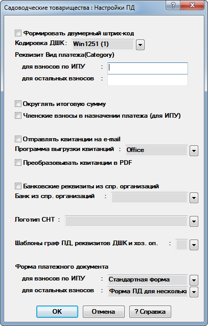

Настройки печати ПД
Данный диалог предназначен для изменения настроек печати квитанций (рис. 1).

Рис. 1. Настройки печатиРассмотрим поля, доступные для заполнения:
-
Формировать двумерный штрих-код - признак формирования двумерного штрих-кода.
-
Кодировка ДШК - указывается кодировка ДШК в зависимости от требований банка. По умолчанию установлена Win1251.
-
Реквизит Вид платежа(Category) - указывается значение реквизита ДШК. Для бланка 2.01 используется значение из графы для остальных взносов. Для бланка 3.01 используется значение из графы для взносов по ИПУ.
-
Округлять итоговую сумму - признак округления итоговых сумм в квитанциях и хозяйственных операциях.
-
Членские взносы в назначении платежа - признак замены наименований статей Электроэнергия, Вода и Газ на Членские взносы при формировании квитанций и ПКО.
-
Отправлять квитанции на e-mail - признак отправки квитанций на электронную почту.
-
Программа выгрузки квитанций - указывается программа выгрузки квитанций для отправки на электронную почту. По умолчанию выбран MS Word, но иногда могут возникать проблемы при выгрузке. Поэтому, в случае возникновения таких проблем, рекомендуется скачать и установить программу Open Office и выбрать значение Open Office. Квитанции будут выгружены и отправлены в формате .doc.
-
Преобразовывать квитанции в PDF - признак преобразования квитанций в формат .pdf.
-
Банковские реквизиты из спр. организаций - признак использования банковских реквизитов из справочника организаций, а не из реквизитов, указанных в настройках программы.
-
Банк из спр. организаций - выбор банка, реквизиты которого будут использованы при формировании квитанций.
-
Логотип СНТ - указывается путь до файла логотипа СНТ. Поддерживаются только файлы в формате *.bmp. Если путь не указан или по указанному пути файл не найден, то логотип не будет выведен. Логотип выводится под надписью ИЗВЕЩЕНИЕ.
-
Шаблоны граф ПД, реквизитов ДШК и хоз. оп. - даёт доступ к настройке шаблонов. Подробную информацию можно получить по этой ссылке.
-
Форма платежного документа - указывается форма ПД для соответствующих бланков. Для бланка 2.01 используется значение из графы для остальных взносов. Для бланка 3.01 используется значение из графы для взносов по ИПУ.
После нажатия на кнопку ОК внесённые изменения будут сохранены.